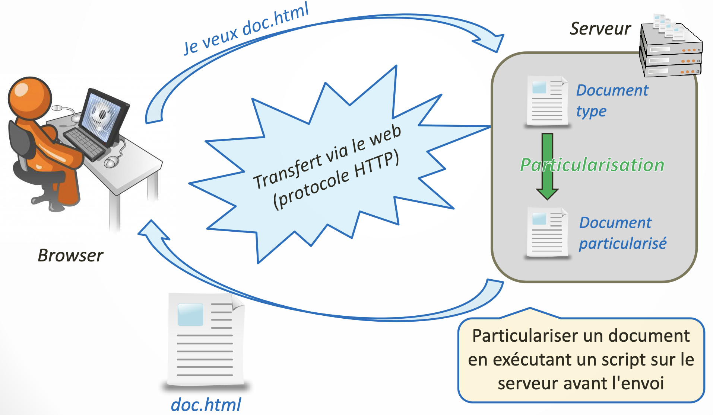
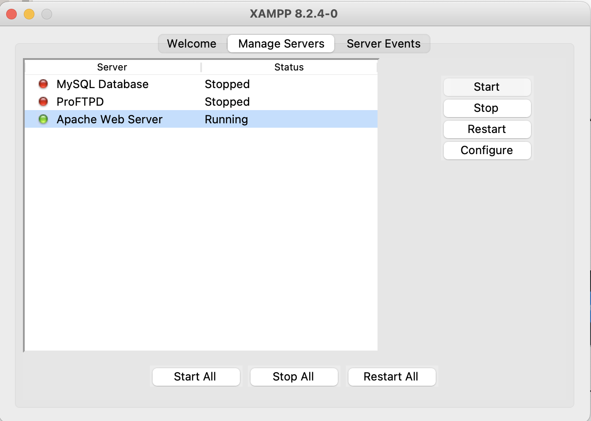
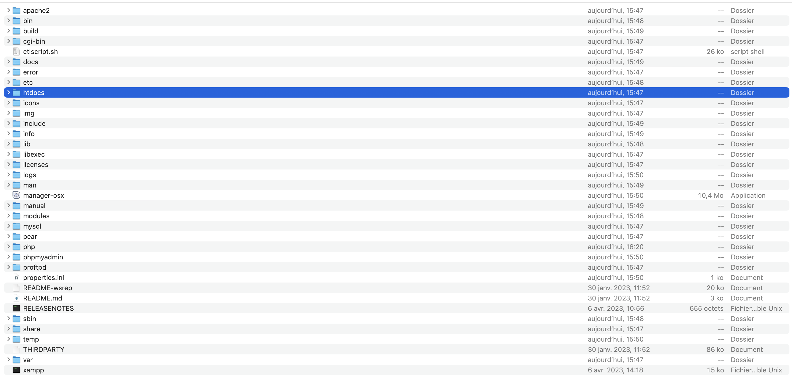
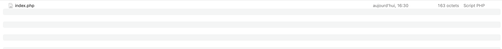
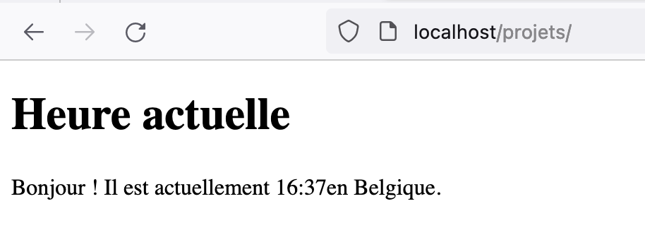

<img src="img/indbg.jpg" class="logo-top-left" alt="Logo"> <div class="title-container"> <h1 class="main-title">Développement d'un site web dynamique</h1> <h2 class="subtitle">introduction</h2> <img src="img/php.png" class="centered-image" alt="Logo PHP"> </div> --- ## On parle de quoi ? 1. <a href="UAA12-intro.html#3">Fonctionnement d'un site internet</a> 2. <a href="UAA12-intro.html#7">Le langage PHP</a> 3. <a href="UAA12-intro.html#10">Installation d'un serveur PHP sur une machine</a> --- ## Fonctionnement d'un site internet (version 3TTr) <br> <br> <img height="350px" src="img/http1.png"> <br> <small>Image tirée du cours de "Développement web" - HENALLUX 2018</small> --- ## Fonctionnement d'un site internet (version 4TTr) <br> <br> <img height="350px" src="img/http2.png"> <br> <small>Image tirée du cours de "Développement web" - HENALLUX 2018</small> --- ## Fonctionnement d'un site internet (version 5-6TTr) <br> <br>  <br> <small>Image tirée du cours de "Développement web" - HENALLUX 2018</small> --- ## Deux ressources fondamentales <div class="resources-container"> <div class="resource-card browser-card"> <div class="resource-icon">🌐</div> <h3 class="resource-title">Un navigateur</h3> <ul class="resource-list"> <li>Envoie les demandes de fichiers (HTML / CSS / JavaScript)</li> <li>Réceptionne les réponses</li> <li>Gère l'affichage (HTML / CSS)</li> <li>Exécute du JavaScript</li> </ul> </div> <div class="resource-card server-card"> <div class="resource-icon">🖥️</div> <h3 class="resource-title">Un serveur</h3> <ul class="resource-list"> <li>Est un ordinateur sur lequel un logiciel est installé</li> <li>Est accessible depuis internet</li> <li>Est capable de répondre à des demandes de fichiers</li> <li>Est capable d'exécuter des scripts en modifiant ces fichiers</li> </ul> </div> </div> ## Le langage PHP ### Un premier exemple Le PHP s'écrit directement dans un fichier HTML. ```PHP <h1>Heure actuelle</h1> <p>Bonjour ! Il est actuellement <?php $heure = date('H:i'); echo $heure; ?> en Belgique.</p> ``` Lorsqu'un document contient du PHP, l'extension du fichier devient .php (et plus .html !). --- ## Le langage PHP ### Un premier exemple Une fois que le serveur PHP aura exécuté le script, le fichier HTML suivant sera envoyé au client : ```html <h1>Heure actuelle</h1> <p>Bonjour ! Il est actuellement 11:20 en Belgique.</p> ``` --- ## Le langage PHP ### En résumé * **PHP vs. JavaScript** * PHP permet d'écrire des scripts coté serveur, JavaScript permet d'écrire des scripts coté client * PHP ne permet pas d'interagir avec l'utilisateur car PHP est exécuté avant l'envoi de la page au client * PHP peut interagir avec des fichiers, avec des bases de données, etc. * **Le but de PHP est de construire des pages web dynamiques** * un même fichier PHP peut donner plusieurs fichiers HTML différents * **PHP est un langage "stateless"** : * une fois le boulot terminé, il oublie tout ! * si un navigateur émet deux requêtes, elles seront traitées de manière indépendante ! --- ## Installation d'un serveur PHP sur une machine * Télécharger et installer XAMPP : https://www.apachefriends.org/download.html --- ## Installation d'un serveur PHP sur une machine * Ouvrir l'application et se rendre dans l'onglet de gestion des serveurs ("Manage Servers") <br> <img height="350px" src="img/xampp0.png"> --- ## Installation d'un serveur PHP sur une machine * Vérifier que le serveur Apache est bien en cours d'exécution ("running")  --- ## Installation d'un serveur PHP sur une machine * Revenir ensuite dans l'onglet principal ("Welcome") et cliquer sur le bouton permetant d'ouvrir le dossier de l'app ("Open application folder") <img height="350px" src="img/xampp0.png"> --- ## Installation d'un serveur PHP sur une machine * Ouvrir le dossier "htdocs"  --- ## Installation d'un serveur PHP sur une machine * Supprimer les fichiers déjà présents <img height="200px" src="img/xampp2.png"> --- ## Installation d'un serveur PHP sur une machine * Créer un dossier qui contiendra vos projets <img height="200px" src="img/xampp3.png"> --- ## Installation d'un serveur PHP sur une machine * Placer vos fichiers PHP/HTML/CSS/JS dans ce dossier  --- ## Installation d'un serveur PHP sur une machine * Accéder à l'url suivante depuis un navigateur WEB : http://localhost/projets/ 